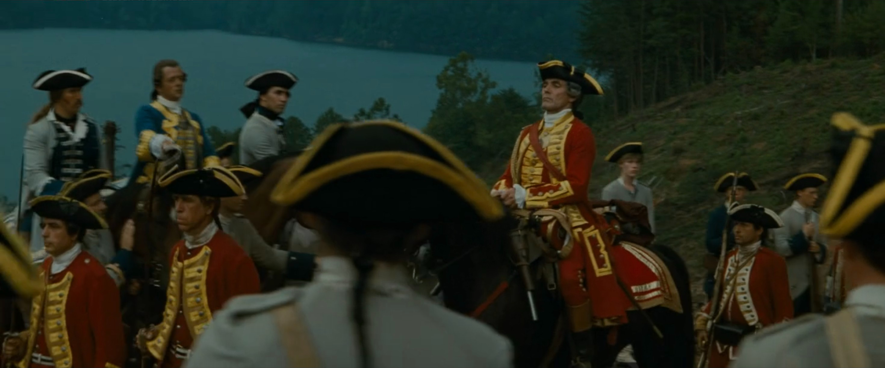

George Monro was a British Army Lieutenant-Colonel who unsuccessfully defended Fort William Henry against a French siege in 1757 during the French and Indian War, part of the global conflict known as the Seven Years' War.

Fig.1. Lieutenant Monro in 1992 film The Last of the Mohicans